June 2022 (version 1.69)
Update 1.69.1: The update addresses these issues.
Update 1.69.2: The update addresses these issues.
Downloads: Windows: User System Arm64 | Mac: Universal Intel silicon | Linux: deb rpm tarball Arm snap
Welcome to the June 2022 release of Visual Studio Code. There are many updates in this version that we hope you'll like, some of the key highlights include:
- 3-way merge editor - Resolve merge conflicts within VS Code.
- Command Center - New UI to search files, run commands, and navigate cursor history.
- Do Not Disturb mode - Silence non-critical notification popups.
- Toggle Light/Dark themes - Quickly switch between preferred light and dark themes.
- Terminal shell integration - Display command status, run recent commands, and more.
- Task output decorations - Highlights task success or failure exit codes.
- Git Commit action button - Configure your default Git Commit action.
- Debug Step Into Target support - Allows you to step directly into functions when paused.
- JavaScript sourcemap toggling - Switch to debugging compiled rather than source code.
- Color theme tester - Use vscode.dev to preview color themes.
- VS Code Server preview - Run the same server used for Remote Development.
If you'd like to read these release notes online, go to Updates on code.visualstudio.com.
Watch the release party: Listen in as the VS Code team discusses some of the new features. You can find the recording of the event on our YouTube channel.
Insiders: Want to try new features as soon as possible? You can download the nightly Insiders build and try the latest updates as soon as they are available.
Workbench
3 way merge editor
In this release, we continued working on the 3-way merge editor. This feature can be enabled by setting git.mergeEditor to true and will be enabled by default in future releases.
The merge editor allows you to quickly resolve Git merge conflicts. When enabled, the merge editor can be opened by clicking on a conflicting file in the Source Control view. Checkboxes are available to accept and combine changes in Theirs or Yours:
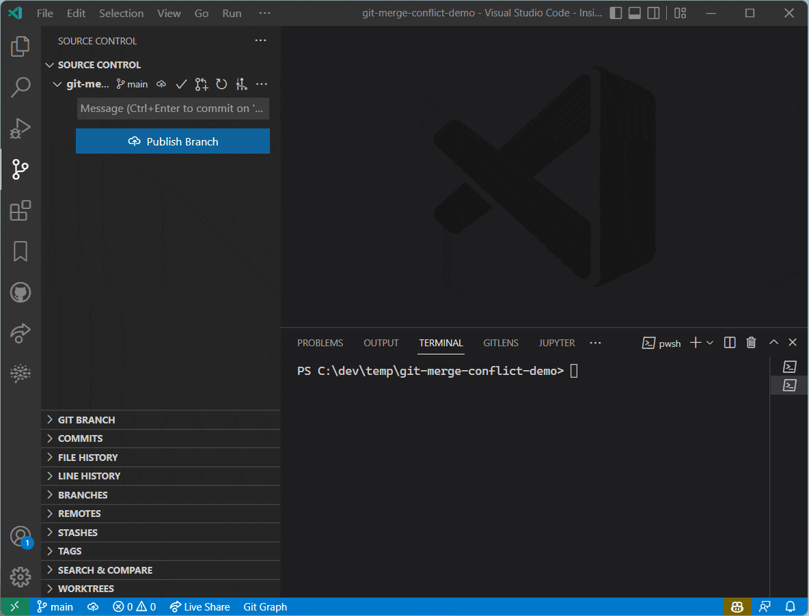
All language features are available in the merge editor (including diagnostics, breakpoints, and tests), so you get immediate feedback about any issues in the merged result.
The result can also be edited directly. Note how the checkbox updates as expected:
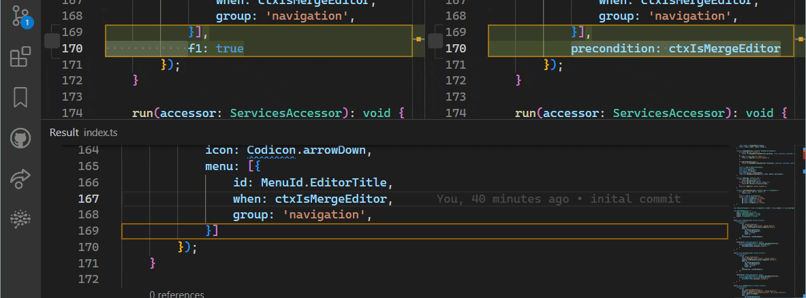
When closing the merge editor or accepting the merge, a warning is shown if not all conflicts have been addressed.
The merge editor supports word-level merging - as long as the changes don't intersect, both sides can be applied. If the insertion order matters, it can be swapped. At any time, the conflict can also be resolved manually.
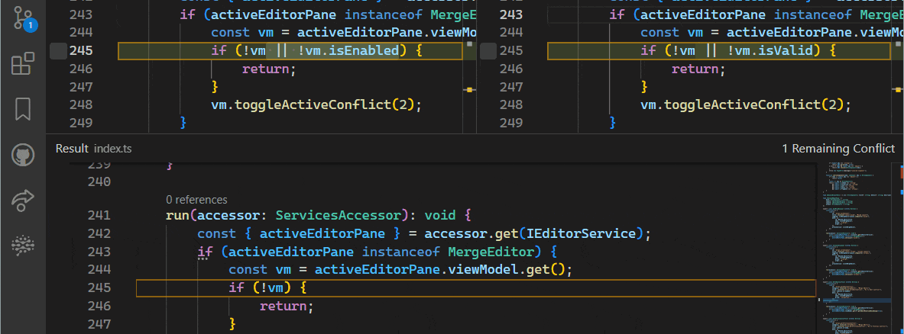
We would love to hear your feedback! To share a merge conflict with us, use the command Merge Editor (Dev): Copy Contents of Inputs, Base and Result from JSON and paste the content in your GitHub issue.
Command Center
The Command Center has been polished and is now ready to be tried. Enable it via window.commandCenter setting.
The Command Center replaces the normal title bar and lets you quickly search for files in your project. Click the main section to display the Quick Open dropdown with your recent files and a search box.
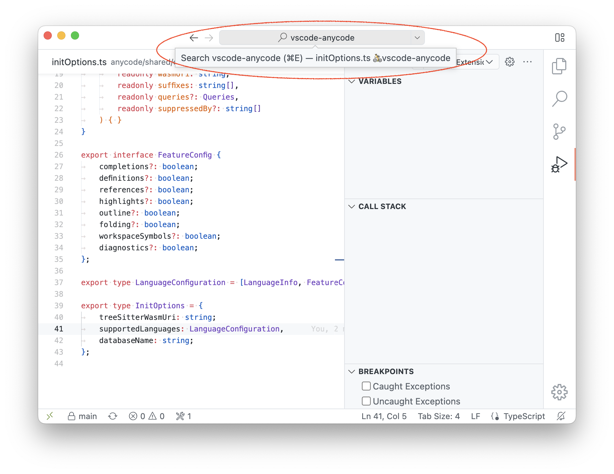
Theme: GitHub Theme
The Command Center also has a button on the right to display the Quick Access options via '?'. On the left are Go Back and Go Forward buttons to navigate through your editor history.
Settings editor modified indicator
The Settings editor now shows when a setting has a language override. For context, language overrides always take precedence over non-language-specific overrides, so if the value of a setting doesn't seem to affect the behavior of the setting for a certain type of file, it could be that the setting has a language override.
The indicator text was changed to be more clear and concise. The short video below shows the new Modified elsewhere indicator. Hovering over the indicator reveals a hover that shows language overrides, when applicable. The video later shows the new default override indicator with the text Default value changed.
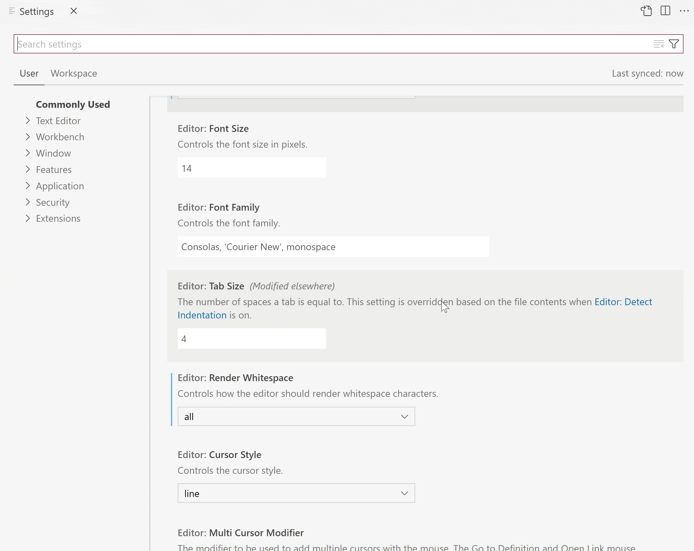
Theme: Light Pink
Do Not Disturb mode
The new Do Not Disturb mode hides all non-error notification popups when enabled. Progress notifications will be automatically shown in the Status bar. Hidden notifications are still available to view in the Notification center.
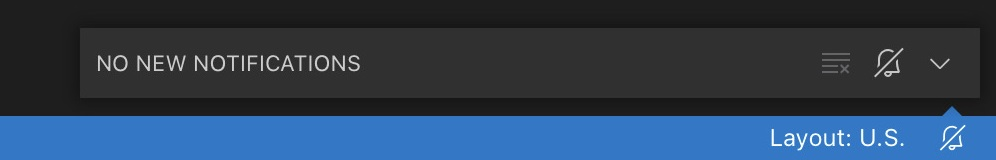
You toggle Do Not Disturb mode by opening the Notification center (select the bell icon in the right of the Status bar) and clicking the slash bell icon. Do Not Disturb mode is indicated in the Status bar by the slash bell icon.
Toggle between Light and Dark themes
A new command allows you to toggle between your preferred light and dark themes, Preferences: Toggle between Light/Dark Themes. When in a light theme, the command switches to a dark theme and vice versa.
When in a high contrast theme, the command remains in high contrast and switches to the preferred high contrast theme of the opposite color theme.
The preferred themes are defined by the settings:
workbench.preferredDarkColorThemeworkbench.preferredLightColorThemeworkbench.preferredHighContrastColorThemeworkbench.preferredHighContrastLightColorTheme
Minimap context menu
The VS Code minimap displays a high level outline of your source code file on the side of the editor. You have been able to toggle the visibility of the minimap via the View: Toggle Minimap command or disable the minimap completely with the Editor > Minimap: Enabled (editor.minimap.enabled) setting. With this release, there is now a context menu to easily show or hide the minimap.
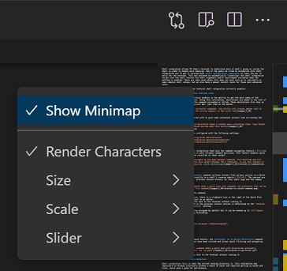
You can also tune the appearance with the Size (editor.minimap.size), Scale (editor.minimap.scale), and Slider (editor.minimap.showSlider) settings. If the minimap is hidden, you can still display the context menu by right-clicking the side gutter.
Share menu
The Copy vscode.dev Link command can be used from the File > Share submenu to quickly get a vscode.dev link for your open GitHub repository. The Share submenu is also available from the editor context menu.
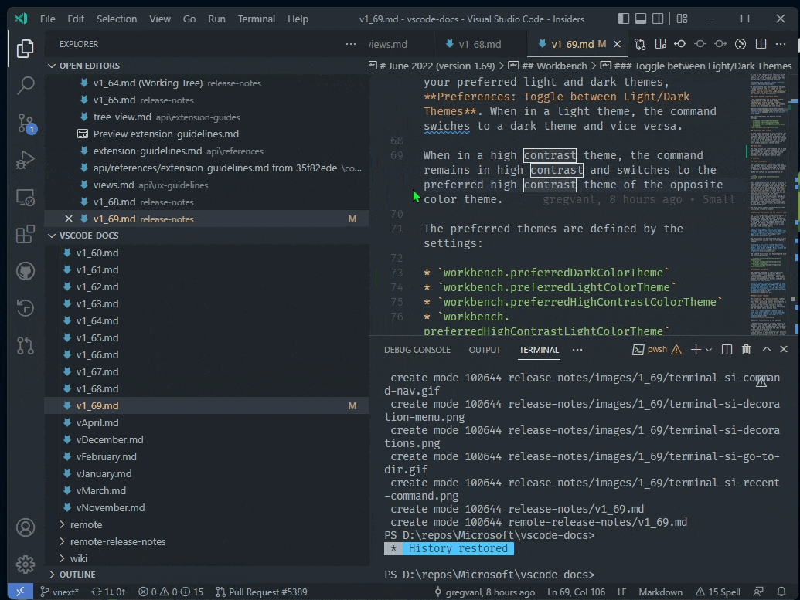
Terminal
Shell integration
Shell integration for PowerShell, bash, and zsh that has been in preview since the January release is now out of preview! We're planning on enabling it by default in the 1.70 release.
To enable the shell integration feature, check Terminal > Integrated > Shell Integration : Enabled in the Settings editor or set the value in your settings.json:
"terminal.integrated.shellIntegration.enabled": true
Shell integration allows VS Code's terminal to understand more of what's going on inside the shell in order to enable more features. One of the goals with shell integration was for it to work with zero configuration required. This was achieved by automatically "injecting" the shell integration script into the shell session via shell arguments and/or environment variables when the setting is enabled. There are some cases where this does not work such as in sub-shells or some complex shell setups, but we also have a manual install route for those more advanced cases.
Below is a summary of the features shell integration currently provides:
Command decorations and the overview ruler
Shell integration has the ability to get the exit codes of the commands run within the terminal. Using this information, decorations are added to the left of the line to indicate whether the command succeeded or failed. These decorations also show up in the overview ruler in the scroll bar, just like in the editor.
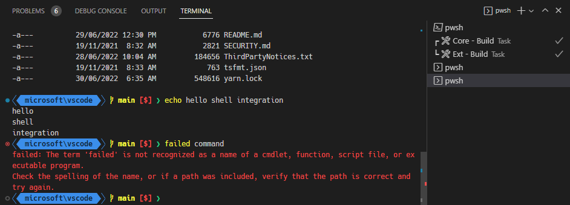
The decorations can support contextual actions like rerunning the command:
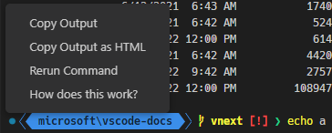
The command decorations can be configured with the following settings:
terminal.integrated.shellIntegration.decorationIconterminal.integrated.shellIntegration.decorationIconSuccessterminal.integrated.shellIntegration.decorationIconError
Command navigation
The commands detected by shell integration feed into the command navigation feature (Ctrl/Cmd+Up, Ctrl/Cmd+Down) to give it more reliable command positions. This feature allows quick navigation between commands and selection of their output.
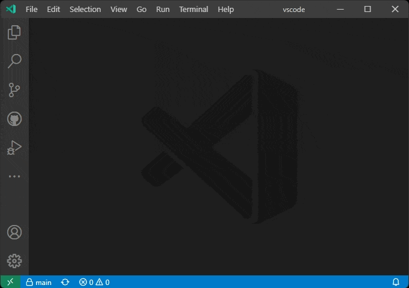
Run recent command
The Terminal: Run Recent Command command surfaces history from various sources in a Quick Pick, providing similar functionality to a shell's reverse search (Ctrl+R). Recent commands come from the current session's history, previous session history for this shell type, and the common shell history file.
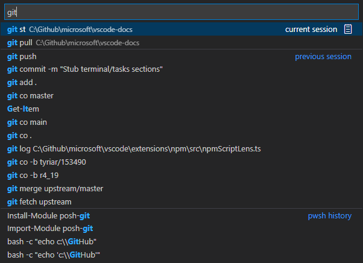
Some other functionality of the command:
- In the current session section, there is a clipboard icon in the right of the Quick Pick that will open the command output in an editor.
Altcan be held to write the text to the terminal without running it.- The amount of history stored in the previous session section is determined by the
terminal.integrated.shellIntegration.historysetting.
There is currently no keybinding assigned by default to Run Recent Command but, as an example, it could be hooked up to Ctrl+Space with the following keybinding:
{
"key": "ctrl+space",
"command": "workbench.action.terminal.runRecentCommand",
"when": "terminalFocus"
},
Go to recent directory
Similar to the run recent command feature, the Terminal: Go to Recent Directory command keeps track of directories that have been visited and allows quick filtering and navigating (cd) to them:
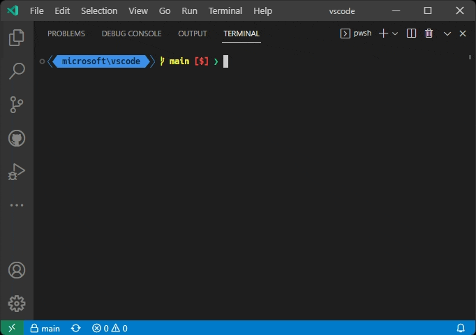
Alt can be held to write the text to the terminal without running it.
Current working directory detection
Shell integration tells us what the current working directory is. This information was previously impossible to determine on Windows without a bunch of hacks, and required polling on macOS and Linux, which wasn't good for performance.
The current working directory is used to resolve relative links, show the directory a recent command ran within, as well as support the split current working directory "terminal.integrated.splitCwd": "inherited" feature.
Growing support for shell setups
This release we improved integration with bash-preexec, added basic support for powerlevel10k, and detected more cases where shell integration will not work and gracefully disable the feature. We expect a long tail of improvements in this area over time.
SetMark sequence support
The terminal now supports the sequence 'OSC 1337 ; SetMark ST' originally created by iTerm2, making it possible to add a mark on the left of the line as well as in the scroll bar:
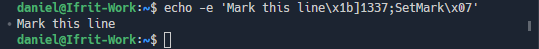
Theme: Sapphire Theme
Here are some examples of how to trigger this in scripts:
- bash:
echo -e 'Mark this line\x1b]1337;SetMark\x07' - pwsh:
Write-Host "Mark this line`e]1337;SetMark`a"
Custom rendering of simple Powerline glyphs
The four common angled bracket Powerline symbols are now custom rendered similar to box drawing and block characters when GPU acceleration is enabled in the terminal. This comes with several benefits:
- Sub-pixel anti-aliasing will never be used that could cause unsightly red or blue outlines on either side, breaking up the "powerline".
- These characters will work without installing a patched font.
- Line height affects these characters.
Before:
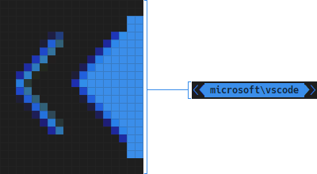
After:
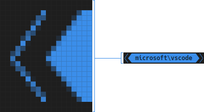
Consistent format for messages from VS Code
Previously messages in the terminal that were directly written by VS Code, not the process, used several different formats. This is now consistent across the board with loud format and a more subtle format:
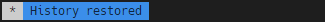
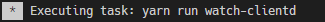
Accessibility improvements
The terminal saw several improvements to accessibility this iteration:
- More links are now available by default in the Terminal: Open Detected Link... command, with the ability to search the rest of the terminal buffer.
- The Terminal: Run Recent Command command now allows inputting the resulting command without running it by holding
Alt. - Find in the terminal has improved screen reader announcements.
- Up and down can be used within navigation mode (
Ctrl+Up) without using a modifier. - Page up and page down can now be used in navigation mode (
Ctrl+Up) to scroll by page.
Process reconnection and revive improvements
Terminal persistence received some UX and reliability improvements:
- Previously reloading a window
ntimes would shownsession restored messages. Now the session restored message should only show up when that particular session has had input. - The session restored message that previously contained the date has been reduced to simply "History restored" to reduce noise.
- The "environment variable collection" feature that notifies the user about extensions wanting to change the environment (for example, to support automatic Git authentication) now works across reloads.
Tasks
Decorations
A few iterations ago, we added decorations to the terminal buffer and overview ruler, thanks to the shell integration feature, to improve navigation of the terminal. Decorations now also mark points of interest for tasks, which can be jumped to with the command navigation feature (Ctrl/Cmd+Up, Ctrl/Cmd+Down).
For start/stop tasks, a decoration appears next to the start of the task and is styled according to the run's exit code, if any.
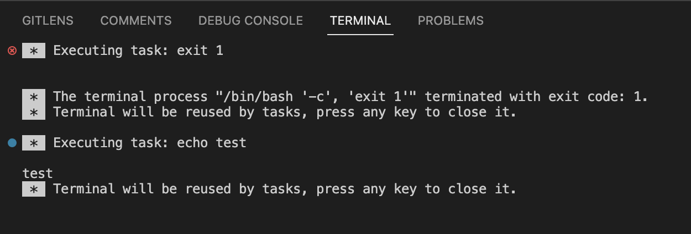
For watch tasks, a decoration appears by the first reported problem for each compilation.
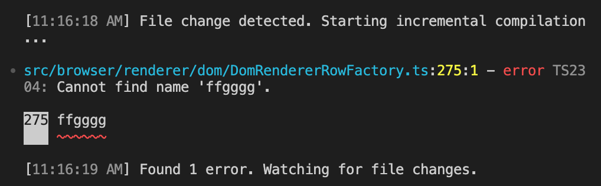
Icon and color support
An icon can now be set for a task with a Codicon id and a terminal ANSI color property. For example:
{
"label": "test",
"type": "shell",
"command": "echo test",
"icon": { "id": "light-bulb", "color": "terminal.ansiBlue" }
}
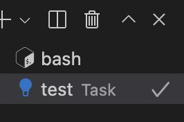
Tasks that have the kind property set to test, use the beaker icon by default.
Source Control
Commit "action button" for Git repositories
In the 1.61 release, Publish and Sync Changes "action buttons" were added for Git repositories. This milestone, we have added a Commit button that has a primary action as well as a set of secondary actions. The secondary action can be controlled using the git.postCommitCommand setting, and lets you also do a push or sync after the commit.
With the addition of the Commit "action button", there is a new setting, git.showActionButton, that you can use to control the Git action buttons shown in the Source Control view. You can still use the general scm.showActionButton setting to globally disable the visibility of any action button contributed by an extension that implements a source control provider.

Author commit message using an editor
This milestone you can now use a full text editor to author commit messages, whenever no message is provided in the commit input box. To use this new flow, click the Commit button without providing a commit message.
You now can author your commit message in the editor. To accept the commit message and complete the commit operation, either close the editor tab or select the Accept Commit Message button in the editor toolbar. To cancel the commit operation, you can either clear the contents of the text editor and close the editor tab, or select the Discard Commit Message button in the editor toolbar.
You can disable this new flow, and fallback to the previous experience that uses the quick input control, by toggling the git.useEditorAsCommitInput setting. After the setting is changed, you will have to restart VS Code for the change to take effect.
To use the same flow for git commit commands executed in the Integrated Terminal, enable the git.terminalGitEditor setting. After enabling the setting, you will have to restart your terminal session.

Branch protection indicators
Last milestone, we added the git.branchProtection setting that you can use to configure specific branches to be protected. This milestone visual indicators (lock icon) were added to the Status bar and the branch picker for the branches that are protected.
Status bar:
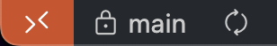
Branch picker:
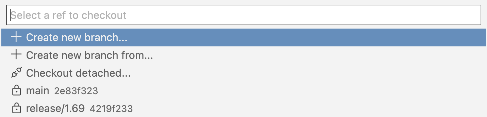
Debugging
Improved Step Into Target UI
Some debuggers allow stepping directly into specific function calls when paused on a line. This iteration, we improved the UI for this:
- Right-clicking on a target region on a source line and picking Step Into Target will automatically step into the target region, if there is one.
- There is a new command Debug: Step Into Target available in the Command Palette and with the ⌘F11 (Windows, Linux Ctrl+F11) keyboard shortcut.
Navigate in the Debug Console
Console access through the Quick Access menu
There is now a Quick Access menu to view a list of your Debug Consoles. In the menu, you can select a console name to show it in the bottom panel. Here, you can search and filter through your console names.
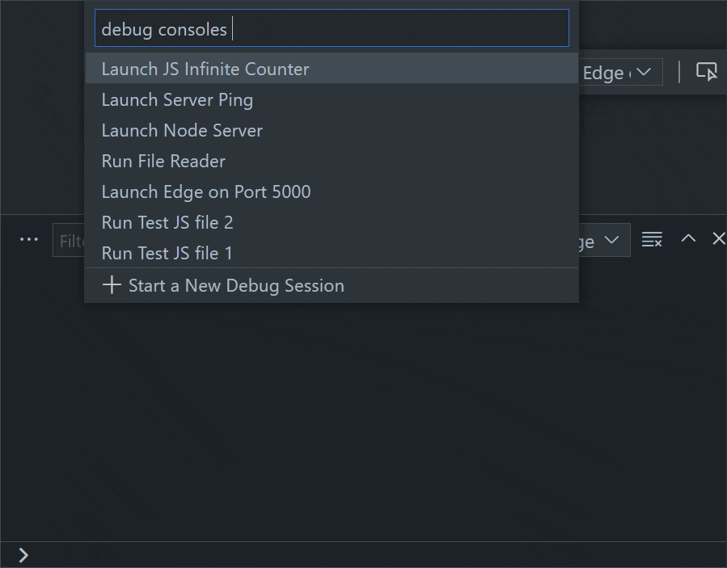
Theme: GitHub Dark Dimmed
There are three different ways to access this Quick Access menu:
-
Typing
?in the Quick Open menu (⌘P (Windows, Linux Ctrl+P)), then selecting the option to view Debug Consoles.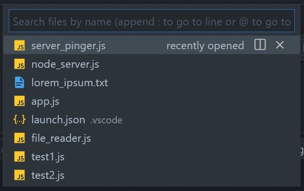
-
Using the Debug: Select Debug Console command.
-
Manually typing out
debug consoles(with a trailing space character) in the Quick Open menu.
Console access through the View menu
You can also access a list of Debug Consoles from within the existing View menu. Type view (with a trailing space) in the Quick Open menu and scroll down to the Debug Console panel header. You will see a list of available Debug Consoles.
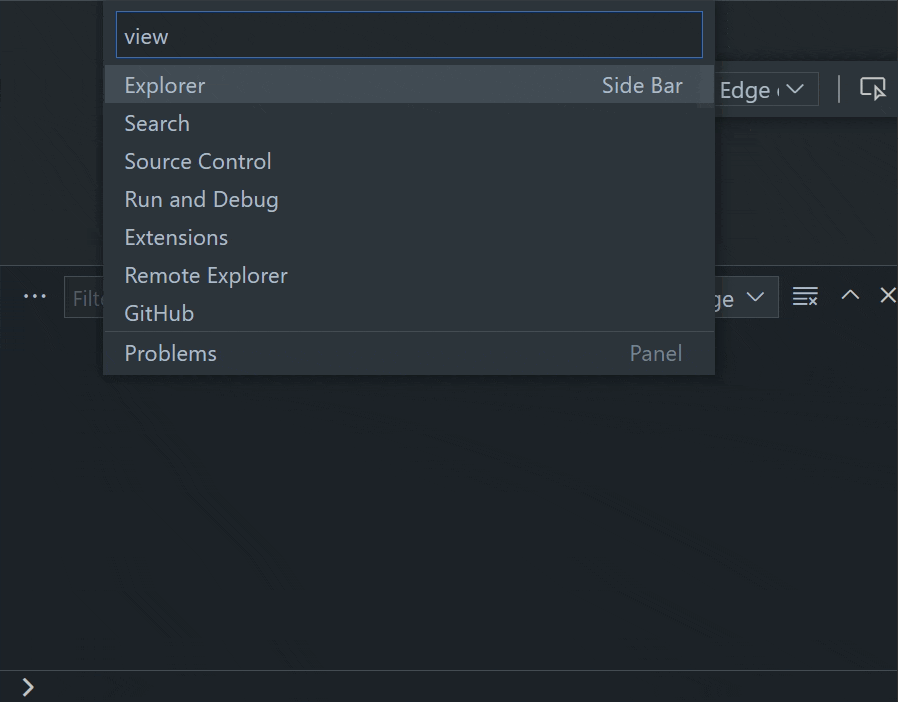
Toggling between consoles
You can now use ⇧⌘[ (Windows, Linux Ctrl+PageUp) to navigate to the previous Debug Console and ⇧⌘] (Windows, Linux Ctrl+PageDown) to go to the next console.
Loaded Scripts search and filtering
Previously, you could only view your loaded scripts within a tree view from the Run and Debug menu. Now, you can search and navigate to a script using the new Debug: Open Loaded Script... command. It works just like the Go to File... command, but you can navigate to a loaded script.
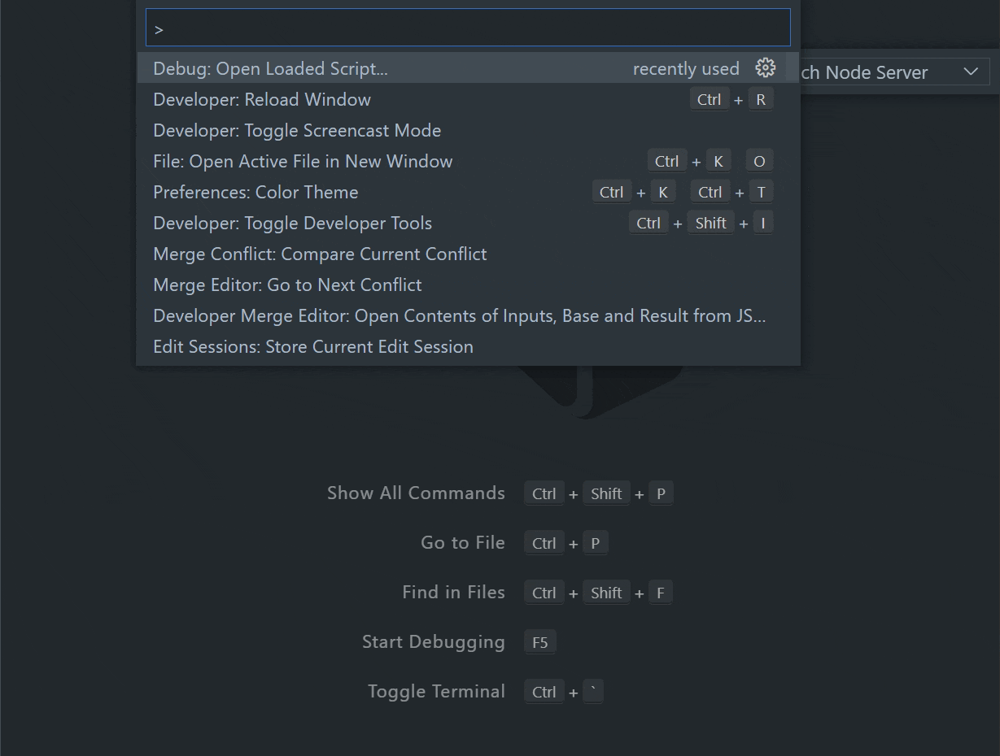
JavaScript debugging
Sourcemap toggling
You can now easily toggle sourcemaps on and off by clicking the 🧭 compass icon in the title of the Call Stack view. When sourcemaps are toggled off, breakpoints set in the source code will still work, but be moved to their equivalent locations in compiled code, and the debugger will step through compiled code instead of source code.
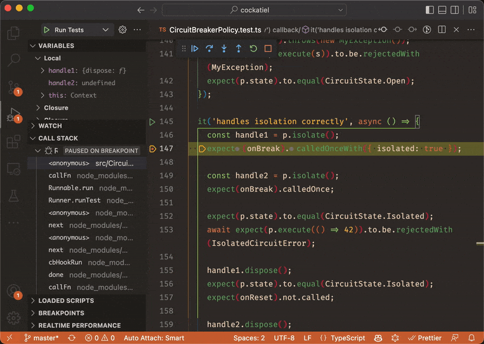
Theme: Codesong
When sourcemaps are turned off, a similar button is shown in the debug toolbar that can turn them back on. Toggle state is persisted in the workspace.
toString() variable previews
If a variable or property has a custom toString() method, it will be called to render the preview in the VARIABLES view and hovers. This is an improvement over generic object previews for complex types that have good string representations.
For example, VS Code's Range has a toString method that makes it easier to digest at a glance:
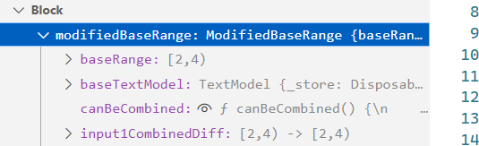
Step Into Target support
The JavaScript debugger now supports Step Into Target, allowing you to easily step into function calls on a line of code.
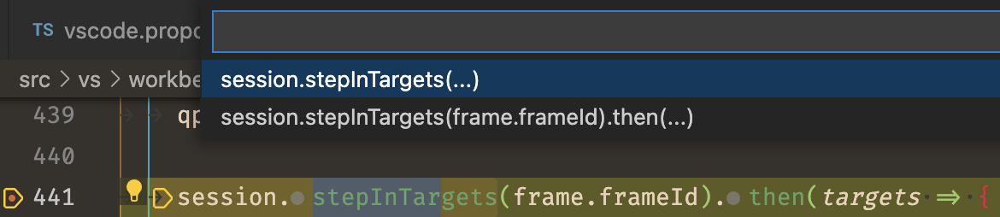
This can be accessed via the Debug: Step Into Target command (⌘F11 (Windows, Linux Ctrl+F11)) or by right-clicking on the line.
Unbound breakpoint warning icon in JavaScript debugging
If you are debugging a TypeScript/JavaScript project and having trouble configuring sourcemaps or getting your breakpoints to bind, VS Code will now show a hint message in the Breakpoints view with a link to the JavaScript debugger's breakpoint troubleshooting tool. You will also see the hint when hovering the gray breakpoint icon in the editor.
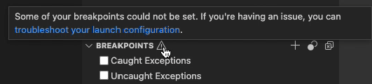
When the API to show this hint is finalized, other debuggers will be able to show the hint with their own appropriate message.
Editor
Refactoring with Preview
Previously, there was no way to review changes that would have been applied by a refactoring. To improve the refactoring experience, there is now a Refactor with Preview command that can be accessed from the Command Palette. Refactor with Preview... works just like the Refactor... command, but will open up a refactor preview panel. Users can select a refactor preview to open up a larger view of the refactoring preview in the editor. This iteration primarily focused on previewing code changes from refactorings, with future features and a custom Code Action menu control to follow.
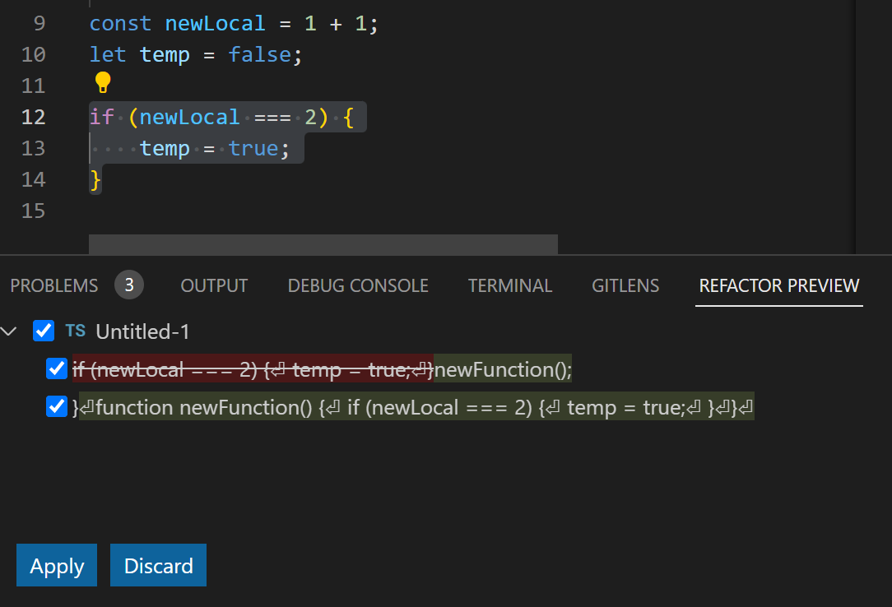
Refactor with Preview... opening a pane in the workbench and opening the refactor preview editor view.

Languages
Support for angle bracket links in Markdown
Markdown lets you use angle brackets to write link destinations that contain spaces or other special characters:
[Some link](<path to file with spaces.md>)
This iteration, we've improved support for angle bracket links so that they are correctly highlighted and clickable in the editor.
Emmet inline completions setting
Emmet has a new setting emmet.useInlineCompletions that allows inline completions to occur in files. For now, it is best to enable the setting only for editing HTML and CSS files.
The short video below was recorded with the editor.quickSuggestions setting set to off for all entries.
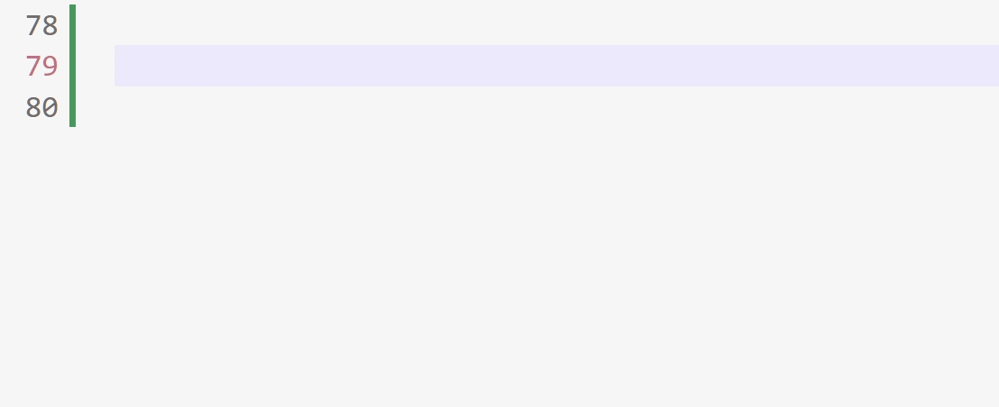
JSON notifications in the language indicator
When there are too many folding ranges, document symbols, or color decorators to be shown, VS Code no longer uses notifications, but uses the JSON language indicator to inform the user.
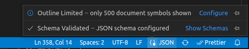
HTML final new line formatter setting change
The setting html.format.endWithNewline has been removed in favor of files.insertFinalNewline.
files.insertFinalNewline applies to all programming languages. If you want different settings per language, you can use a language scope:
{
"[html]": {
"files.insertFinalNewline": true
}
}
Notebooks
Support for in-notebook extension recommendations
To help improve the getting started experience for notebooks when a required extension is not installed, we have updated the extension recommendation flow and let you install extensions directly from a notebook window. This greatly reduces the number of steps needed to go from no extensions installed to runnable cells within VS Code. This iteration enabled this experience for Python Jupyter notebooks with more notebook types and languages to follow.
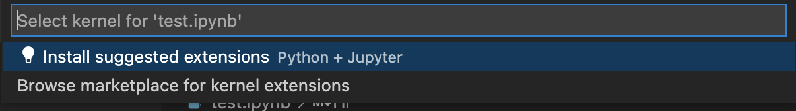
Comments
Toggle editor commenting
The new command Comments: Toggle Editor Commenting toggles all editor commenting features, including the commenting range gutter decoration, the "+" on line hover, and all editor comment widgets. Commenting will be automatically disabled in Zen Mode.
Drag for multiline comments
The Add a Comment "+" button can be dragged to add a multiline comment.
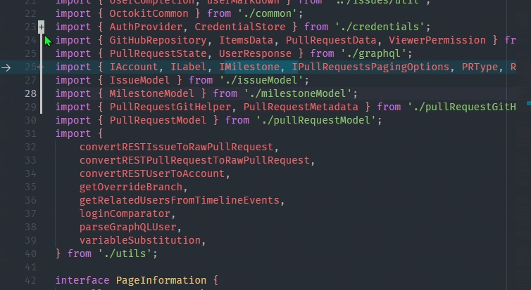
Enterprise
UpdateMode Group Policy on Windows
VS Code now has support for Windows Registry-based Group Policy, which allows system administrators to create and deploy policies on machines they manage.
The first VS Code policy supported is UpdateMode, which overrides the update.mode setting and controls whether VS Code automatically updates when a new version is released.
Refer to Group Policy on Windows in the Enterprise documentation to learn more.
VS Code for the Web
Theme tester supports built in themes
The theme tester is a route in vscode.dev that can be used to showcase and try a color theme without installing it. This has been available for Theme extensions on the Marketplace by specifying the extension ID and theme name. For example, to see the GitHub Theme extension (extension ID github.github-vscode-theme) "GitHub Dark Default" theme, you would launch vscode.dev with the URL:
https://vscode.dev/theme/github.github-vscode-theme/GitHub%20Dark%20Default
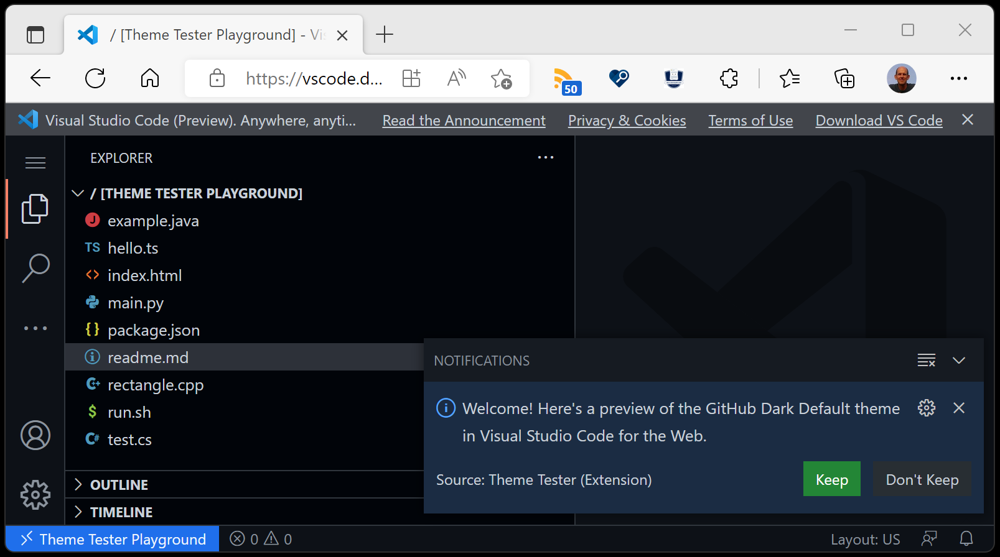
The theme tester can now also be used with the built-in themes in VS Code. Use vscode.theme-defaults for the extension ID placeholder and then the theme name you want to check out.
For example, to test the "High Contrast Light" theme, you would use the following URL:
https://vscode.dev/theme/vscode.theme-defaults/Default%20High%20Contrast%20Light
Partial localization support for extensions
Last iteration in vscode.dev, we introduced localization for strings provided by the core product. This iteration we are including more strings - specifically static strings provided by extensions in their extension manifest. There are still other segments of strings provided by extensions that need to be localized (strings declared in their source code) so we will continue with that work next iteration.
Configure Display Language command
For some users, configuring the language used by their browser is not possible. To work around this, VS Code for the Web now has the Configure Display Language command that allows you to override the default language that your browser is set to.
Additionally, you can use the Clear Display Language Preference command remove this override.
VS Code Server (private preview)
In VS Code, we want users to seamlessly leverage the environments that make them the most productive. The VS Code Remote Development extensions allow you to work in the Windows Subsystem for Linux (WSL), remote machines via SSH, and dev containers directly from VS Code. These extensions install a server on the remote environment, allowing local VS Code to smoothly interact with remote source code and runtimes.
We are now providing a private preview of a standalone "VS Code Server," which is a service built off the same underlying server used by the remote extensions, plus some additional functionality, like an interactive CLI and facilitating secure connections to vscode.dev, without requiring an SSH connection.
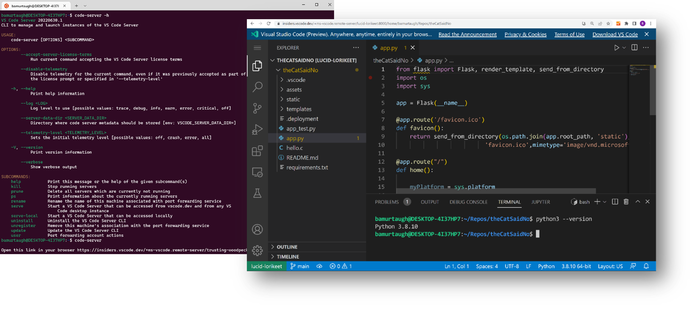
Our ultimate goal is to enhance the code CLI you use today to open both desktop and web instances of VS Code, no matter where your projects are stored. While we're actively working toward this, the VS Code Server is a great milestone we're eager to release as a private preview to get your feedback.
You can learn more about how to get started with the VS Code Server in its announcement blog post and video, and review further details in its documentation.
Contributions to extensions
ESLint
Version 2.2.6 of the ESLint extension has shipped. In addition to various bug fixes, there is now linting support in notebook cells for all supported ESLint languages.
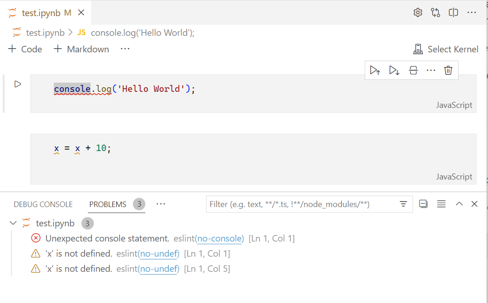
Jupyter
IPyWidgets
IPyWidgets are now supported for kernels other than Python, such as Common Lisp and IHaskell.
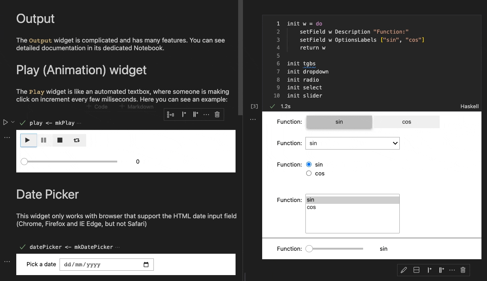
A number of IPyWidget issues related to loading of resources (images, scripts, etc.) have been resolved, thereby improving support for widgets such as VegaFusion, ipyleaflet, Chemiscope, mobilechelonian, and ipyturtle.

Other notable IPyWidget fixes include displaying complex and nested (including interactive) outputs within the Jupyter Output widget.
Web extension
We've made progress on supporting more of the core functionality in the web version of the Jupyter extension.
This month the following features were ported to the web extension:
- Exporting an Interactive Window
- Debugging an Interactive Window
- Collapsible cells in an Interactive Window
If you'd like to experiment with the functionality, launch Jupyter from your local machine with:
jupyter notebook --no-browser --NotebookApp.allow_origin_pat=https://.*\.vscode-cdn\.net
And then connect to it using the command Jupyter: Specify Jupyter server for connections from within vscode.dev.
For more information (and to comment), see this discussion item.
GitHub Pull Requests and Issues
There has been more progress on the GitHub Pull Requests and Issues extension, which allows you to work on, create, and manage pull requests and issues. Highlights of this release include:
- A new setting
"githubPullRequests.ignoredPullRequestBranches"to ignore branches for pull requests. - The Publish branch? dialog can be skipped when creating a PR using the setting
"githubPullRequests.pushBranch". - An auto-merge checkbox is now available in the Overview editor.
Check out the changelog for the 0.46.0 release of the extension to see the other highlights.
Preview features
TypeScript 4.8 support
This update includes support for the upcoming TypeScript 4.8 release. See the TypeScript 4.8 iteration plan for more details on what the TypeScript team is currently working on.
To start using the TypeScript 4.8 nightly builds, install the TypeScript Nightly extension.
Markdown link validation
We've continued to polish link validation in Markdown files. This experimental feature can help catch broken links to images or headers in Markdown files.
In addition to fixing a number of bugs and improving performance, we've also renamed some of the settings to make their functionality more clear. Here are the new setting names:
markdown.experimental.validate- Enable/disable validation all link validation functionality.markdown.experimental.validate.fileLinks.enabled- Enable/disable validation of links to local files:[link](/path/to/file.md)markdown.experimental.validate.fileLinks.markdownFragmentLinks- Enable/disable validation of the fragment part of links to local files:[link](/path/to/file.md#some-header)markdown.experimental.validate.fragmentLinks.enabled- Enable/disable validation of links to headers in the current file:[link](#_some-header)markdown.experimental.validate.referenceLinks.enabled- Enable/disable validation of reference links:[link][ref].markdown.experimental.validate.ignoreLinks- A list of links that skip validation. This is useful if you link to files that don't exist on disk but do exist once the Markdown has been published.
Give it a try and let us know what you think of the new feature!
Settings Profiles
We have been working the last couple of months to support Settings Profiles in VS Code, which is one of the most popular asks from the community. In this milestone, we are happy to announce that this feature is ready for preview in the Insiders release via workbench.experimental.settingsProfiles.enabled setting. Please try out this feature and let us know your feedback by creating issues in our VS Code Repository or commenting in issue #116740.
A Settings Profile is comprised of settings, keyboard shortcuts, extensions, state, tasks, and snippets. You can customize VS Code for different development environments like Web, Machine Learning, or for multiple programming language classrooms like Python, Java or for personal modes like Work or Demo and save them as Settings Profiles. You can open multiple workspaces (folders) with different profiles simultaneously based on the projects you are working on or the classroom you are attending or when you are presenting.
Below demonstrates customizing VS Code for web development environment and creating a settings profile out of it.
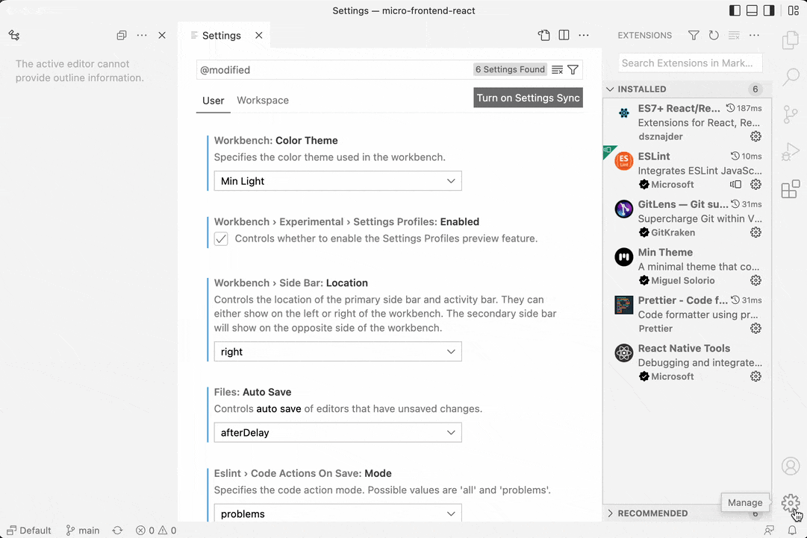
Here shows how you can easily change from a development profile to a demo profile.
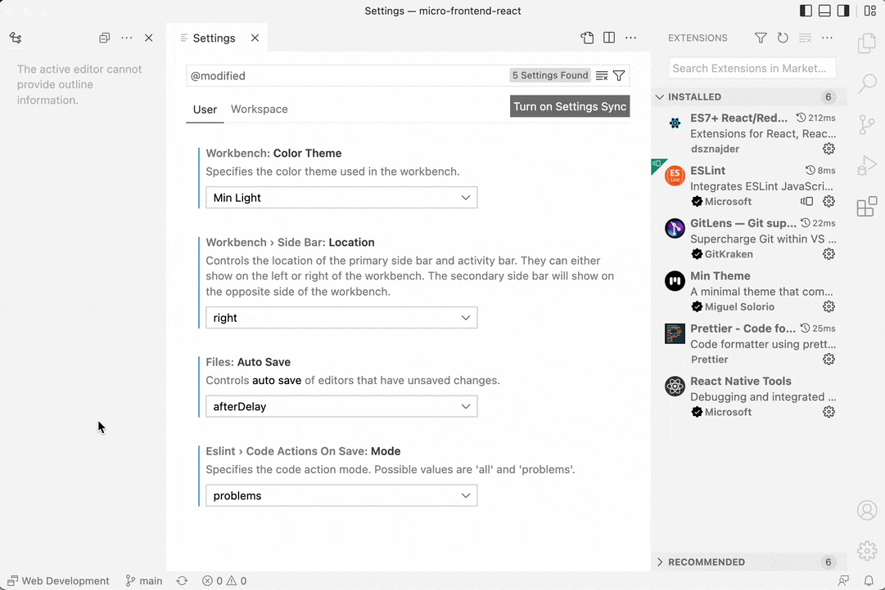
You can open your React project in web development profile and Python class project in Python class profile simultaneously as shown in the following picture.
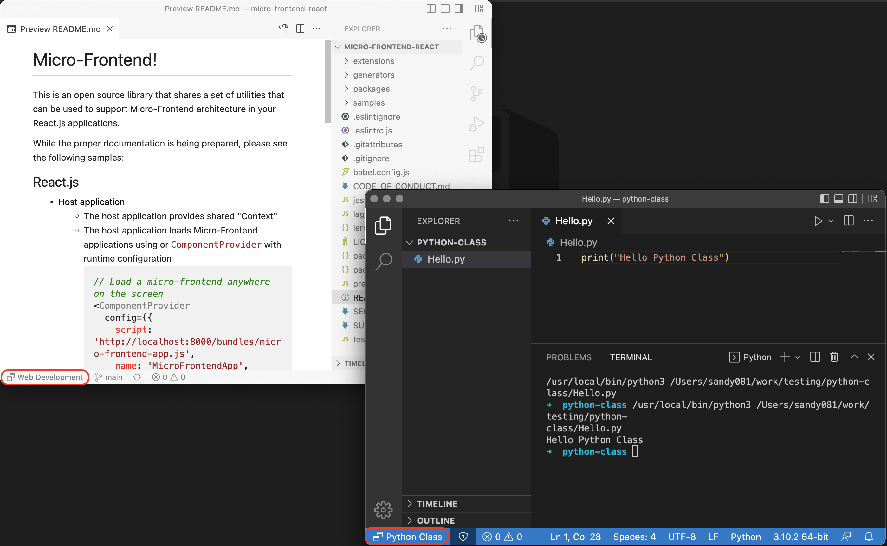
You can customize the foreground and background colors of the settings profile Status bar entry by using following color customization keys in settings.
"workbench.colorCustomizations": {
"statusBarItem.settingsProfilesBackground": "#ce4918",
"statusBarItem.settingsProfilesForeground": "#e0dfdb",
}
You can manage and remove settings profiles using the Remove Settings Profile... action available in the Settings Profiles sub menu in Settings gear menu.
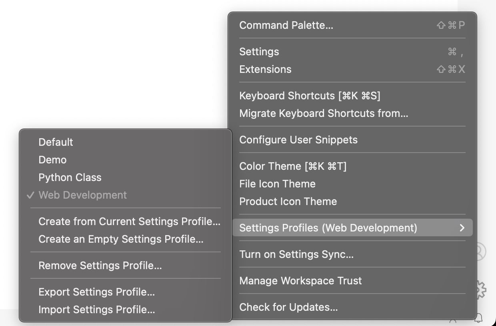
Even though you can customize VS Code per profile, there are some settings that can only be customized at the application level. For example, all application-scoped settings like update.mode, language pack extensions, settings sync enablement, and Workspace Trust state are customized across all profiles at the application level.
Access edit sessions across VS Code for the Web and desktop
This milestone we are announcing a preview of edit sessions in VS Code. Edit sessions enable you to bring your uncommitted changes along when you continue working on a repository wherever VS Code is available, whether that is VS Code for the Web, desktop VS Code, or across different machines.
For example, you can use edit sessions to transfer and access working changes:
- From a repository in github.dev to a local desktop clone of that repository.
- From a clone of a repository on a Windows device to a clone of that repository on a macOS device.
Edit sessions are currently in preview behind the workbench.experimental.editSessions.enabled setting. In this initial release, you can use the following commands to store and resume your working changes:
- Edit Sessions: Store Current Edit Session
- Edit Sessions: Resume Latest Edit Session
To get started with edit sessions, use the Edit Sessions: Store Current Edit Session command and sign in with GitHub or Microsoft authentication when prompted. Then use the Edit Sessions: Resume Latest Edit Session command in a repository on another machine or VS Code instance to restore the working contents of all modified files to your workspace. You can sign out of edit sessions at any time using the Edit Sessions: Sign Out command.
As we continue to iterate on the edit sessions experience, try it out and share your feedback with us via a comment in issue #141293.
Extension authoring
Iterable vscode.d.ts collection types
To make it easier to work with the collection types in vscode.d.ts, this iteration we've made them all iterable. This allows you to use for...of loops and spreads with these types:
const data: vscode.DataTransfer = ...;
for (const [mime, item] of data) {
const str = await item.asString();
...
}
The full set of newly iterable types is:
DiagnosticCollectionDataTransferEnvironmentVariableCollectionTestItemCollection
Extensible notebook renderers
Notebook renderers allow extensions to customize how cells and outputs are rendered in notebooks. This iteration, we've extended the notebook renderer API to allow a renderer to augment another renderer, including some of built-in renderers from VS Code. This allows extensions to add new functionality to notebook rendering without having to reimplement a full renderer. It also provides a better user experience since users don't have to switch between a new renderer to see the correctly rendered content.
The Notebook Extend Markdown Renderer Sample shows how an extension can extend VS Code's built-in Markdown renderer with emoji support. Let's take a quick look at the key parts!
The API for extensible notebook renderers is intentionally loosely defined. To get started, our extension needs to contribute a new notebook renderer. Because we are extending an existing renderer, we use the entrypoint field here to specify both the ID of the renderer to extend (in this case, VS Code's built-in vscode.markdown-it-renderer) along with a path to the renderer script to load:
"notebookRenderer": [
{
"id": "sample.markdown-it.emoji-extension",
"displayName": "Markdown it Emoji renderer",
"entrypoint": {
"extends": "vscode.markdown-it-renderer",
"path": "./out/emoji.js"
}
}
]
This renderer will now be activated whenever the vscode.markdown-it-renderer is activated.
Now to extend the vscode.markdown-it-renderer, our renderer can call a method on the base renderer. This method is specific to the base renderer. In this case, we first get the base renderer using getRenderer and then call extendMarkdownIt on it to augmented the instance of Markdown-It it uses for rendering:
import type * as MarkdownIt from 'markdown-it';
import type { RendererContext } from 'vscode-notebook-renderer';
interface MarkdownItRenderer {
extendMarkdownIt(fn: (md: MarkdownIt) => void): void;
}
export async function activate(ctx: RendererContext<void>) {
// Acquire the base renderer
const markdownItRenderer = await ctx.getRenderer('vscode.markdown-it-renderer') as MarkdownItRenderer | undefined;
if (!markdownItRenderer) {
throw new Error(`Could not load 'vscode.markdown-it-renderer'`);
}
// Load our Markdown-It extension
const emoji = require('markdown-it-emoji');
// Call the base renderer's extension method (extendMarkdownIt) to augment
// the Markdown-It with emoji support.
markdownItRenderer.extendMarkdownIt((md: MarkdownIt) => {
return md.use(emoji, {});
});
}
The key part to note here is that extendMarkdownIt is simply a method returned by the base renderer. Other extensible renderers can easily return their own extension points.
Check out the Notebook Extend Markdown Renderer Sample for a complete example of extending VS Code's built-in Markdown-It renderer.
Read external files from DataTransfers
Extensions can now read external files using a DataTransfer. This can be used in the tree drag and drop API, as well as in the drop into editor API proposal:
export class TestViewDragAndDrop implements vscode.TreeDataProvider<Node>, vscode.TreeDragAndDropController<Node> {
public async handleDrop(target: Node | undefined, sources: vscode.DataTransfer, token: vscode.CancellationToken): Promise<void> {
// Get a list of all files
const files: vscode.DataTransferFile[] = [];
sources.forEach((item) => {
const file = item.asFile();
if (file) {
files.push(file);
}
});
const decoder = new TextDecoder();
// Print out the names and first 100 characters of the file
for (const file of files) {
const data = await file.data();
const text = decoder.decode(data);
const fileContentsPreview = text.slice(0, 100);
console.log(file.name + ' — ' + fileContentsPreview + '\n');
}
...
}
}
High contrast light in webviews
Webviews now can target high contrast light color themes using the vscode-high-contrast-light CSS class:
.vscode-high-contrast-light .error {
color: red;
}
The vscode-high-contrast-light class is automatically added to the body element of the webview.
Icons in Test Item Labels
Codicons in the standard $(icon) format can now be used in the TestItem.label to show icons in the Test Explorer view as well as test results.
Source Control input box enablement
Extension authors can now toggle the enablement of the input box in the Source Control view using the enabled property.
JSON word pattern change
Every language comes with a word pattern that defines which characters belong to a word when in that language. JSON was different to all other languages in that it included the quotes of string literals and the full string literal content. It now follows other languages and contains just letters, numbers, and hyphens.
The change will fix issues when expanding the selection (Command: Expand Selection), allow word completions inside strings, and fix some code suggestion abnormalities.
Extensions that relied on the word pattern, for example for the default replace range in code completions, need to update their implementation to explicitly state the replace range for all completions.
Debug Adapter Protocol
- To provide a better user experience for the Step Into Target feature, additional information was added to DAP's
StepInTargettype. With the four propertiesline,column,endLine, andendColumn, a step-into target can now be linked to the corresponding source range. - Passing program arguments to a debuggee is hampered by two conflicting goals: some users want to be able to pass all characters to the debuggee and other users want to use some characters to talk to an underlying shell. To better support both use cases, we are working on DAP's
runInTerminalrequest to control the escaping of special characters in program arguments. A proposal is already available. If you are a debug extension author interested in this DAP addition, we'd appreciate your feedback. - In addition, we have addressed several documentation issues of the Debug Adapter Protocol. These include clarifications around the terms "clients" and "falsey", more precise specification for checksums and date strings, and improved wording for
Source.origin.
Proposed APIs
Every milestone comes with new proposed APIs and extension authors can try them out. As always, we want your feedback. Here are the steps to try out a proposed API:
- Find a proposal that you want to try and add its name to
package.json#enabledApiProposals. - Use the latest vscode-dts and run
vscode-dts dev. It will download the correspondingd.tsfiles into your workspace. - You can now program against the proposal.
You cannot publish an extension that uses a proposed API. There may be breaking changes in the next release and we never want to break existing extensions.
Paste Edit Provider
We've updated the documentPaste API proposal to make it easier to correctly implement, specifically when working with multiple cursors.
As a reminder, this API lets extensions hook into copy and paste inside text editors. Extensions can use it to modify the text that is inserted on paste. The document paste extension sample shows the updated API in action:
/**
* Provider that maintains a count of the number of times it has copied text.
*/
class CopyCountPasteEditProvider implements vscode.DocumentPasteEditProvider {
private readonly countMimeTypes = 'application/vnd.code.copydemo-copy-count';
private count = 0;
prepareDocumentPaste?(
_document: vscode.TextDocument,
_ranges: readonly vscode.Range[],
dataTransfer: vscode.DataTransfer,
_token: vscode.CancellationToken
): void | Thenable<void> {
dataTransfer.set(this.countMimeTypes, new vscode.DataTransferItem(this.count++));
dataTransfer.set('text/plain', new vscode.DataTransferItem(this.count++));
}
async provideDocumentPasteEdits(
_document: vscode.TextDocument,
_ranges: readonly vscode.Range[],
dataTransfer: vscode.DataTransfer,
_token: vscode.CancellationToken
): Promise<vscode.DocumentPasteEdit | undefined> {
const countDataTransferItem = dataTransfer.get(this.countMimeTypes);
if (!countDataTransferItem) {
return undefined;
}
const textDataTransferItem = dataTransfer.get('text') ?? dataTransfer.get('text/plain');
if (!textDataTransferItem) {
return undefined;
}
const count = await countDataTransferItem.asString();
const text = await textDataTransferItem.asString();
// Build a snippet to insert
const snippet = new vscode.SnippetString();
snippet.appendText(`(copy #${count}) ${text}`);
return { insertText: snippet };
}
}
export function activate(context: vscode.ExtensionContext) {
// Enable our provider in plaintext files
const selector: vscode.DocumentSelector = { language: 'plaintext' };
// Register our provider
context.subscriptions.push(
vscode.languages.registerDocumentPasteEditProvider(
selector,
new CopyCountPasteEditProvider(),
{
pasteMimeTypes: ['text/plain']
}
)
);
}
WebUSB, WebSerial, and WebHID access on web
There is now experimental support for using WebUSB, Web Serial, and WebHID from web extensions.
To access these APIs, your extension first needs to request access to the desired devices by running one of these commands:
workbench.experimental.requestUsbDeviceworkbench.experimental.requestSerialPortworkbench.experimental.requestHidDevice
These commands will prompt the user to select a device. Each command takes a list of device filters as its argument. For example:
import * as vscode from 'vscode';
await vscode.commands.executeCommand('workbench.experimental.requestUsbDevice', {
filters: [
{ vendorId: 0x404 } // Your custom filter or empty if you want users to select any device
]
});
After the command finishes, your extension can use the normal web APIs to access any devices that the user has granted access to:
const devices = await navigator.usb.getDevices();
// Do something with devices
All of the normal web device APIs should work, with the expectation of those such as requestDevice that need to show UI elements to the user.
At the moment, this functionality only works on web and support is limited to the Chrome and Edge browsers. Also keep in mind that this feature is still experimental, so we may iterate on its design. Give it a try and share your feedback!
Engineering
Electron 18 update
In this milestone, we finished the exploration to bundle Electron 18 into VS Code desktop and we want to thank everyone involved with self-hosting on Insiders. This update comes with Chromium 100.0.4896.160 and Node.js 16.13.2.
Documentation
TypeScript editing and refactoring
There are two new topics focusing on TypeScript Editing and Refactoring in VS Code. There you'll learn about specific features such as Inlay hints, CodeLens, and formatting options specific to TypeScript as well as the available code refactorings.
Notable fixes
- 109565 Terminal always show uppercase letters when using caps lock to switch input source
- 146491 Color Difference between active and inactive menu lost
- 149538 Unable to log in to Microsoft or GitHub Account in China
- 149890 Can't drag an item and drop it to an empty treeview
- 150934 RPM should not list bundled libraries as "provides"
- 151158 Retain selected kernel in untitled notebook when saving notebook
- 151664 Improve the efficiency of announcements when stepping through code with screen readers
- 151739 workbench.action.submitComment not functional when first replying to a comment thread & confusing when editing comments
- 152067 Only show comment thread range when the comment is expanded
- 152141 Drop task status when the process exits
- 152642 Added a button to remove watch expressions with a single click
Thank you
Last but certainly not least, a big Thank You to the contributors of VS Code.
Web extensions
Extension authors for enabling extensions that run code as web extensions (the list below is between June 7 and July 4, 2022):
- Pipeline Editor (Alexey Volkov)
- Django Support (Al Mahdi)
- ROOT File Viewer (Alberto Pérez de Rada Fiol)
- Thirft Formatter (alingse)
- Smarty Template Support (Aswin Kumar)
- Sort Editors (Aswin Kumar)
- Compare View (chekweitan)
- CloudStudio.github-authentication (CloudStudio)
- Text Power Tools (Dániel Tar)
- filtered-interview-tool (filtered-vscode)
- HashiCorp HCL (HashiCorp)
- fcs-vscode-web (HiStruct Team)
- Marked (hyrious)
- Our Code (Ivan Dwane)
- 前端开发集合 (jihe)
- surfaces.txt (kanadelab)
- lcode webdav editor (lcode)
- Lightrun (Lightrun)
- f-string Converter (Python 3.6+) (mdebi)
- MutableAI (beta) (mutable-ai)
- NaiveSystems Analyze (Extension) (Naive Systems)
- File Utils (pomdtr)
- Secrets (pomdtr)
- dotbook (Prasanth)
- Common Lisp (Qingpeng Li)
- react replace/refactor component (rumemeta-maila)
- fiber-ifttt-tool (t-codespaces)
- ide-data-sync (t-codespaces)
- Even Better TOML (tamasfe)
- web-ext (yogesh)
- Vetur Extended (zardoy)
Issue tracking
Contributions to our issue tracking:
Pull requests
Contributions to vscode:
- @a-stewart (Anthony Stewart)
- Add more sanitization around the attributes in MD generated HTML PR #149100
- Prefer the markdown description in the preferences page PR #152860
- Remove duplicate declarations in terminal PR #153280
- @alanrenmsft (Alan Ren): add aria-description support for selectbox PR #152251
- @andrewbranch (Andrew Branch)
- [typescript-language-features] Pass through all
typescript.unstable.*settings PR #151472 - [typescript-language-features] Add setting for autoImportFileExcludePatterns PR #153160
- [typescript-language-features] Pass through all
- @babakks (Babak K. Shandiz)
- Polish PR template picker PR #151415
- [markdown] Ignore brackets inside link text PR #151610
- Add option to always reveal tests after state change PR #152331
- 🎁 Add "Remove expression" as an action bar command to debug watch expressions PR #152861
- 🔨 Indicate "No snippet available" on the surround with snippet picker PR #152892
- @Balastrong (Leonardo Montini): Add command to toggle between light/dark color themes PR #151554
- @CGNonofr (Loïc Mangeonjean): Add removeAllMarkers method in monaco api PR #151237
- @gjsjohnmurray (John Murray):
Keep Editors Open->Disable Preview Mode(fixes #152240) PR #152322 - @guiherzog (Guilherme Herzog): Improve performance of CompressibleAsyncDataTree PR #152961
- @jeanp413 (Jean Pierre)
- Fixes terminal not restoring properly PR #149621
- Fix terminal quick pick index PR #152699
- Fixes detaching a terminal editor doesn't fire vscode.window.onDidCloseTerminal event PR #152791
- @JohnnyCrazy (Jonas Dellinger): A full editor can be used as git commit message editor PR #95266
- @jramsay (jram): [npm extension] exclude top level npm_modules when detecting npm scripts in workspaces PR #150205
- @laurentlb (Laurent Le Brun): Comments: Wrap non-Markdown content PR #152987
- @leopoldsedev (Christian Leopoldseder)
- Fix #151515 PR #151590
- Fix #148150 PR #151594
- Implement action to clear keyboard shortcuts search history PR #151607
- @MachineMitch21 (Mitch Schutt): Focus editor for tab after dragged over for 1500 millis PR #149604
- @mbelsky (Max Belsky): Support
Transform to Kebab CasePR #147956 - @Mingpan
- Arrows to revert changes in side by side diff editor PR #151826
- Add config for disable arrows in diff PR #153199
- @MonadChains (MonadChains): Fix missing horizontal bracket guides when editor.wrappingIndent == "same" PR #152529
- @prashantvc (Prashant Cholachagudda): Added the
VSCode-SessionIdfor extension queries Issue2961 PR #153271 - @Priyankcoder (Priyank Rastogi): Add latex to markdown embedded languages PR #151732
- @qingpeng9802 (Qingpeng Li): Fix symbolkind icon PR #152216
- @thegecko (Rob Moran): Add web command to request device access PR #152310
- @TheV360 (V360): Fix inlay hints being offset by 1px in some cases PR #153424
- @tjx666 (余腾靖): fix jsx text foreground in tomorrow-night theme PR #151478
- @ulugbekna (Ulugbek Abdullaev)
- add progress reporting for fetching repos PR #153082
- add auto-hide option for minimap (default = false) which PR #153093
- @yiliang114 (jinjing.zzj): fix: typos PR #153229
- @yutotnh (yutotnh): fix: typo PR #153187
Contributions to vscode-generator-code:
- @hawkticehurst (Hawk Ticehurst): Fix incorrect keyboard shortcut listed in template READMEs PR #354
Contributions to vscode-js-debug:
- @jakebailey (Jake Bailey): Stop REPL stack traces at the REPL eval frame PR #1263
Contributions to vscode-pull-request-github:
- @blindpirate (Bo Zhang): Show pull request's close button for author PR #3507
- @leopoldsedev (Christian Leopoldseder): Implement quick self assign link as available on .com (#_3382) PR #3601
Contributions to debug-adapter-protocol:
Contributions to devcontainers/cli:
- @juzuluag (Juan Zuluaga): Add multi build support PR #24